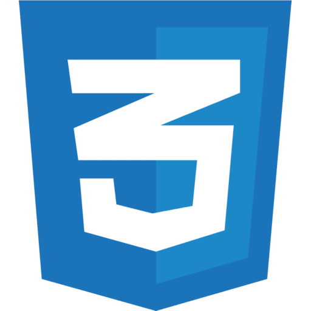
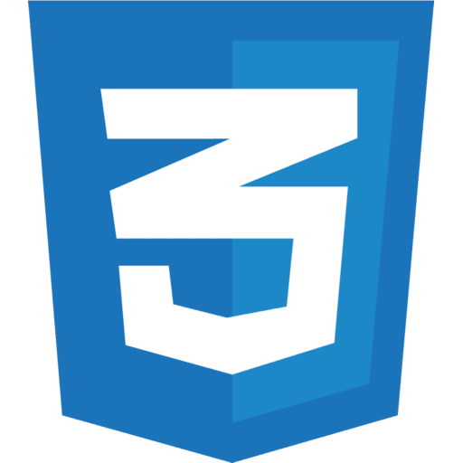

Projects (5)
Set Logic

A work in progress Java program that deals with set operations such as the union, intersection or complement of two sets. A GUI and a set builder are planned.

Blackjack

Python program that follows the procedural programming paradigm with SQLite integration for storing player stats and history. Featuring core blackjack mechanics like drawing cards, trump logic, and dealer AI, the game is designed for engaging solo play. A Tkinter-based GUI is also in place to enhance the user experience.
REDZOMBIES


2D top-down wave-based shooter game as part of my A-level Computer Science coursework, inspired by the round-based zombies mode in Call of Duty. Built using Unity (2020) and C#, the game features stripped-down graphics and core mechanics such as differing weapons, wave progression, and resource management.

Sinister Web

A 2D top-down, click and point/multiple options horror-thriller inspired by the horrors of the dark web. This prototype was made using Godot engine 4.0 and GDscript.

Minecraft Portfolio
 

I created a portfolio website to showcase my custom Minecraft datapacks. Built with HTML and CSS, the website highlights each datapack with detailed descriptions and their corresponding download links. It serves as a centralized hub for players to explore my creations and easily access them.